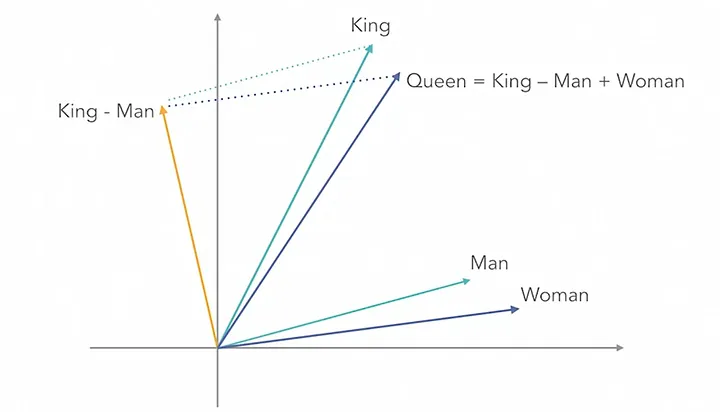
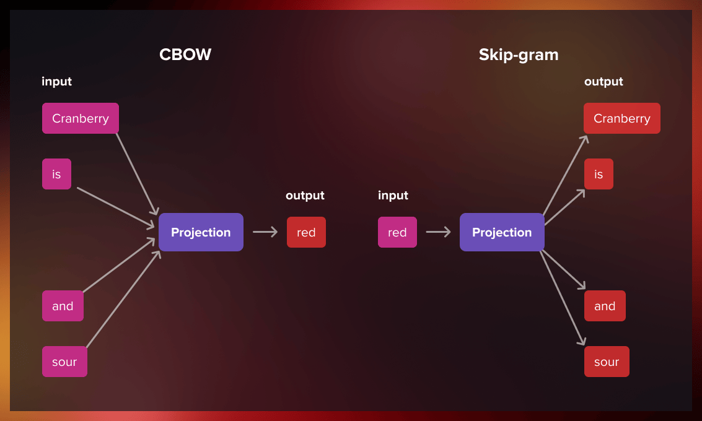
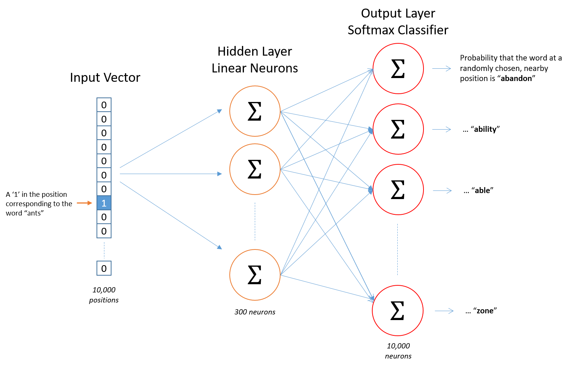
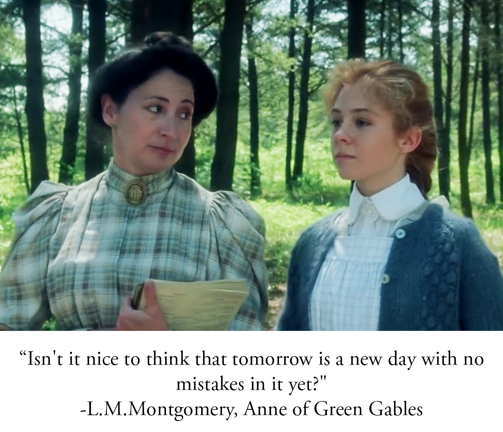
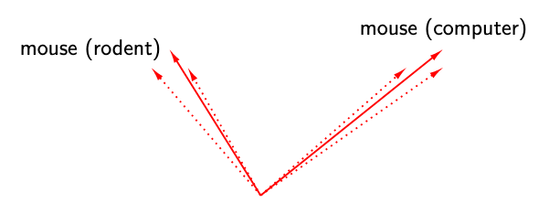

Word2Vec: Learning Meaning from Context#
Mahmood Amintoosi, Spring 2026
Learning Objectives#
After this notebook, you should be able to:
Explain why word embeddings are needed.
Understand semantic relationships in embedding spaces.
Explain Word2Vec as an encoder–decoder style model.
Understand Skip-Gram and CBOW.
Generate Word2Vec training examples.
Train Word2Vec on Anne of Green Gables.
Explore learned embeddings using similarity and analogy tasks.
Visualize embeddings using t-SNE.
Use pretrained embeddings with spaCy.
Connect Word2Vec to modern transformer embeddings.
A Surprising Observation#
One of the most famous discoveries in deep learning and NLP is that semantic relationships can emerge from simple vector arithmetic:
king - man + woman ≈ queen
Paris - France + Iran ≈ Tehran
walk - walking + swimming ≈ swim
How can a neural network learn these relationships from plain text?
Embedding Space Intuition#

The idea is simple:
Every word becomes a point in a high-dimensional space.
Similar words appear close together.
Relationships become directions in that space.
Why One-Hot Encoding Is Not Enough#
Consider:
cat, dog, horse, computer
Using one-hot encoding:
cat = [1,0,0,0]
dog = [0,1,0,0]
horse = [0,0,1,0]
computer = [0,0,0,1]
Problems:
High-dimensional
Sparse
No semantic information
Every pair of words is equally distant
import numpy as np
vocab = ["cat", "dog", "horse", "computer"]
for i, word in enumerate(vocab):
vec = np.zeros(len(vocab))
vec[i] = 1
print(word, vec)
cat [1. 0. 0. 0.]
dog [0. 1. 0. 0.]
horse [0. 0. 1. 0.]
computer [0. 0. 0. 1.]
Problems with One-Hot Encoding:
High Dimensionality: For a vocabulary of 100,000 words, each vector has 100,000 dimensions
No Semantic Information: The angle between “cat” and “dog” is the same as “cat” and “refrigerator”
Sparse Vectors: Almost all values are zero, leading to inefficient computation
The Solution: Dense Word Embeddings#
Word embeddings solve these problems by representing each word as a dense vector (typically 100-300 dimensions) where semantically similar words have similar vectors.
cat → [0.23, -0.45, 0.67, ..., 0.12] (300 dimensions)
dog → [0.25, -0.42, 0.65, ..., 0.15] (300 dimensions)
refrigerator → [-0.89, 0.34, -0.12, ..., -0.56]
Now, the vectors for “cat” and “dog” are close together, while “refrigerator” is far away!
The Distributional Hypothesis#
The foundation of Word2Vec is:
You shall know a word by the company it keeps.
— J. R. Firth
Example:
The cat chased the mouse.
The dog chased the ball.
Because cat and dog occur in similar contexts, Word2Vec tends to learn similar representations for them.
Intuitive Example: Animal Space#
Let’s build an intuitive understanding by creating a simple 2D “animal space” based on two characteristics: cuteness and size (both on a scale of 0-100).
import matplotlib.pyplot as plt
animals = {
'kitten': [95, 10],
'hamster': [90, 8],
'puppy': [92, 15],
'cat': [75, 25],
'dog': [60, 40],
'chicken': [30, 20],
'horse': [40, 70],
'elephant': [50, 95],
'tarantula': [5, 10]
}
# Plot animals
fig, ax = plt.subplots(figsize=(10, 7))
for animal, (cute, size) in animals.items():
ax.scatter(size, cute, s=200)
ax.annotate(animal, (size, cute), xytext=(5, 5), textcoords='offset points')
ax.set_xlabel('Size →', fontsize=12)
ax.set_ylabel('Cuteness →', fontsize=12)
ax.set_title('Animal Space (2D Word Embeddings)', fontsize=14)
ax.set_xlim(-5, 105)
ax.set_ylim(-5, 105)
ax.grid(True, alpha=0.3)
plt.show()

In this 2D space:
Kitten and hamster are close (both small and cute)
Elephant is isolated (very large, moderately cute)
Horse is between small and large animals
Vector Operations Reveal Semantic Relationships#
The power of word embeddings comes from vector arithmetic. Remember the king-man example.
Word2Vec and Encoder–Decoder Models#
In Lecture 8 we studied encoder–decoder architectures.
Word2Vec can be viewed as a very simple encoder–decoder model.
Word
↓
Encoder
↓
Latent Representation
↓
Decoder
↓
Context Prediction
Autoencoder vs Word2Vec#
Autoencoder |
Word2Vec |
|---|---|
Reconstructs input |
Predicts context |
Learns latent code |
Learns word embedding |
Input = target |
Input ≠ target |
Compression |
Semantic representation |
The embedding vector plays a role similar to the latent representation in an autoencoder.
Practical Examples with Pre-trained Models#
Loading Pre-trained Word Vectors#
We’ll use Gensim to load pre-trained word vectors. First, install the required package:
# Install gensim
# !pip install gensim
import numpy as np
import gensim.downloader as api
c:\Users\m.amintoosi\.conda\envs\pth-gpu\lib\site-packages\google\api_core\_python_version_support.py:263: FutureWarning: You are using a Python version (3.10.16) which Google will stop supporting in new releases of google.api_core once it reaches its end of life (2026-10-04). Please upgrade to the latest Python version, or at least Python 3.11, to continue receiving updates for google.api_core past that date.
warnings.warn(message, FutureWarning)
# Load pre-trained GloVe vectors (100-dimensional, trained on Wikipedia)
# This will download the model on first run (~128 MB)
print("Loading pre-trained word vectors...")
model = api.load("glove-wiki-gigaword-100")
print(f"Loaded {len(model.key_to_index):,} word vectors")
Loading pre-trained word vectors...
Loaded 400,000 word vectors
# Examine a word vector
print(f"Vector for 'king' (first 10 dimensions): {model['king'][:10]}")
print(f"Vector shape: {model['king'].shape}")
Vector for 'king' (first 10 dimensions): [-0.32307 -0.87616 0.21977 0.25268 0.22976 0.7388 -0.37954 -0.35307
-0.84369 -1.1113 ]
Vector shape: (100,)
Finding Similar Words#
# Find the 10 most similar words to "king"
similar_to_king = model.most_similar("king", topn=5)
print("Words most similar to 'king':")
for word, similarity in similar_to_king:
print(f" {word:15} → {similarity:.4f}")
Words most similar to 'king':
prince → 0.7682
queen → 0.7508
son → 0.7021
brother → 0.6986
monarch → 0.6978
# Try with other words
for query_word in ["computer", "beautiful", "iran", "tehran"]:
if query_word in model.key_to_index:
print(f"\nWords similar to '{query_word}':")
for word, sim in model.most_similar(query_word, topn=5):
print(f" {word:15} {sim:.4f}")
else:
print(f"'{query_word}' not in vocabulary")
Words similar to 'computer':
computers 0.8752
software 0.8373
technology 0.7642
pc 0.7366
hardware 0.7290
Words similar to 'beautiful':
lovely 0.8909
gorgeous 0.8722
wonderful 0.8081
charming 0.7719
magnificent 0.7332
Words similar to 'iran':
tehran 0.8503
iranian 0.7911
syria 0.7800
iraq 0.7679
nuclear 0.7258
Words similar to 'tehran':
iran 0.8503
iranian 0.7557
pyongyang 0.7014
ahmadinejad 0.6929
moscow 0.6898
The Famous Analogy: King - Man + Woman = Queen#
This is the most famous example of word vector arithmetic. The idea is:
If we take the concept of “king,” remove the “maleness,” and add “femaleness,” we should get “queen.”
# The classic analogy: king - man + woman = ?
result = model.most_similar(positive=['king', 'woman'], negative=['man'], topn=5)
print("king - man + woman = ?")
print("-" * 40)
for word, similarity in result:
print(f" {word:15} → {similarity:.4f}")
king - man + woman = ?
----------------------------------------
queen → 0.7699
monarch → 0.6843
throne → 0.6756
daughter → 0.6595
princess → 0.6521
Queen is the top result! The vector arithmetic successfully captures the gender relationship.
Understanding the Math Behind Analogies#
def explain_analogy(word_a, word_b, word_c, model):
"""
Analogy: word_a is to word_b as word_c is to ?
Mathematically: ? ≈ word_b - word_a + word_c
"""
# Get vectors
vec_a = model[word_a]
vec_b = model[word_b]
vec_c = model[word_c]
# Compute the target vector
target_vec = vec_b - vec_a + vec_c
# Find closest words
results = model.most_similar(positive=[word_b, word_c], negative=[word_a], topn=5)
print(f"Analogy: {word_a} is to {word_b} as {word_c} is to ?")
print(f"\nMathematical operation:")
print(f" target = {word_b} - {word_a} + {word_c}")
print(f" target = {vec_b[:3]}... - {vec_a[:3]}... + {vec_c[:3]}...")
print(f" target = {target_vec[:3]}...")
print(f"\nTop predictions:")
for word, sim in results:
print(f" {word}: {sim:.4f}")
return results
# Run the explanation
explain_analogy("man", "king", "woman", model)
Analogy: man is to king as woman is to ?
Mathematical operation:
target = king - man + woman
target = [-0.32307 -0.87616 0.21977]... - [0.37293 0.38503 0.71086]... + [0.59368 0.44825 0.5932 ]...
target = [-0.10231996 -0.81294006 0.10211003]...
Top predictions:
queen: 0.7699
monarch: 0.6843
throne: 0.6756
daughter: 0.6595
princess: 0.6521
[('queen', 0.7698540687561035),
('monarch', 0.6843381524085999),
('throne', 0.6755736470222473),
('daughter', 0.6594556570053101),
('princess', 0.6520534157752991)]
More Analogy Examples#
def run_analogy(positive, negative, topn=5):
"""Helper function to run analogies."""
results = model.most_similar(positive=positive, negative=negative, topn=topn)
formula = " + ".join(positive)
if negative:
formula += " - " + " - ".join(negative)
print(f"{formula} = ?")
for word, sim in results:
print(f" {word}: {sim:.4f}")
print()
# Geographic analogies
print("=" * 50)
print("GEOGRAPHIC ANALOGIES")
print("=" * 50)
run_analogy(['paris', 'japan'], ['france'])
run_analogy(['tehran', 'germany'], ['iran'])
# Grammatical analogies
print("=" * 50)
print("GRAMMATICAL ANALOGIES")
print("=" * 50)
run_analogy(['walking', 'swim'], ['walk'])
run_analogy(['mice', 'dog'], ['mouse'])
# Semantic analogies
print("=" * 50)
print("SEMANTIC ANALOGIES")
print("=" * 50)
run_analogy(['summer', 'cold'], ['winter'])
run_analogy(['doctor', 'law'], ['hospital'])
==================================================
GEOGRAPHIC ANALOGIES
==================================================
paris + japan - france = ?
tokyo: 0.8994
osaka: 0.7421
japanese: 0.7059
seoul: 0.6949
shanghai: 0.6679
tehran + germany - iran = ?
berlin: 0.8361
munich: 0.7773
frankfurt: 0.7377
cologne: 0.7185
hamburg: 0.7169
==================================================
GRAMMATICAL ANALOGIES
==================================================
walking + swim - walk = ?
swimming: 0.8009
surfing: 0.6603
swam: 0.6448
rowing: 0.6413
jogging: 0.6376
mice + dog - mouse = ?
dogs: 0.8048
rats: 0.7038
cats: 0.6896
animals: 0.6468
horses: 0.6444
==================================================
SEMANTIC ANALOGIES
==================================================
summer + cold - winter = ?
hot: 0.7388
cool: 0.6947
warm: 0.6855
days: 0.6771
turned: 0.6674
doctor + law - hospital = ?
laws: 0.7347
subject: 0.6480
statute: 0.6445
rules: 0.6442
legal: 0.6344
Finding the Odd One Out#
# Find the word that doesn't belong
words_list1 = ["breakfast", "cereal", "dinner", "lunch"]
words_list2 = ["dog", "cat", "car", "fish"]
words_list3 = ["apple", "orange", "banana", "car"]
print("Which word doesn't belong?")
print(f" {words_list1} → {model.doesnt_match(words_list1)}")
print(f" {words_list2} → {model.doesnt_match(words_list2)}")
print(f" {words_list3} → {model.doesnt_match(words_list3)}")
Which word doesn't belong?
['breakfast', 'cereal', 'dinner', 'lunch'] → cereal
['dog', 'cat', 'car', 'fish'] → car
['apple', 'orange', 'banana', 'car'] → car
Computing Similarity Scores#
# Compute similarity between word pairs
word_pairs = [
("king", "queen"),
("king", "man"),
("king", "apple"),
("dog", "puppy"),
("dog", "cat"),
("happy", "sad"),
("fast", "quick"),
("big", "small"),
]
print("Word Pair Similarities:")
print("-" * 45)
for w1, w2 in word_pairs:
sim = model.similarity(w1, w2)
print(f" {w1:10} ↔ {w2:10} : {sim:.4f}")
Word Pair Similarities:
---------------------------------------------
king ↔ queen : 0.7508
king ↔ man : 0.5119
king ↔ apple : 0.2668
dog ↔ puppy : 0.7236
dog ↔ cat : 0.8798
happy ↔ sad : 0.6801
fast ↔ quick : 0.7107
big ↔ small : 0.7180
Interesting observation: Antonyms like “big” and “small” often have high similarity because they appear in similar contexts (e.g., “How big/small is it?”). This shows that word embeddings capture distributional similarity, not necessarily semantic similarity in the traditional sense.
Simple Query: “Capital of Iran”#
# Find the capital of Iran
# Logic: If paris is to france as X is to iran
# X = paris - france + iran
result = model.most_similar(positive=['paris', 'iran'], negative=['france'], topn=5)
print("Query: What is the capital of Iran?")
print(" paris - france + iran = ?")
print("-" * 40)
for word, sim in result:
print(f" {word}: {sim:.4f}")
Query: What is the capital of Iran?
paris - france + iran = ?
----------------------------------------
tehran: 0.8785
iranian: 0.7055
moscow: 0.6929
seoul: 0.6468
cairo: 0.6466
Visualizing Word Relationships (t-SNE)#
from sklearn.manifold import TSNE
import matplotlib.pyplot as plt
# Select interesting words
words_of_interest = [
'king', 'queen', 'prince', 'princess', 'man', 'woman',
'paris', 'france', 'berlin', 'germany', 'rome', 'italy',
'cat', 'dog', 'fish', 'bird', 'horse', 'elephant',
'good', 'bad', 'happy', 'sad', 'big', 'small',
'doctor', 'nurse', 'hospital', 'medicine'
]
# Filter to words that exist in the model
words_of_interest = [w for w in words_of_interest if w in model.key_to_index]
# Get vectors for these words
word_vectors = np.array([model[w] for w in words_of_interest])
# Reduce to 2D using t-SNE
tsne = TSNE(n_components=2, random_state=42, perplexity=min(15, len(words_of_interest)-1))
word_vectors_2d = tsne.fit_transform(word_vectors)
# Plot
plt.figure(figsize=(14, 10))
plt.scatter(word_vectors_2d[:, 0], word_vectors_2d[:, 1], c='blue', alpha=0.5)
for i, word in enumerate(words_of_interest):
plt.annotate(word, (word_vectors_2d[i, 0], word_vectors_2d[i, 1]),
fontsize=10, ha='center', va='bottom')
plt.title("Word Embeddings Visualized with t-SNE", fontsize=14)
plt.xlabel("t-SNE Dimension 1")
plt.ylabel("t-SNE Dimension 2")
plt.grid(True, alpha=0.3)
plt.tight_layout()
plt.show()
c:\Users\m.amintoosi\.conda\envs\pth-gpu\lib\site-packages\joblib\externals\loky\backend\context.py:136: UserWarning: Could not find the number of physical cores for the following reason:
[WinError 2] The system cannot find the file specified
Returning the number of logical cores instead. You can silence this warning by setting LOKY_MAX_CPU_COUNT to the number of cores you want to use.
warnings.warn(
File "c:\Users\m.amintoosi\.conda\envs\pth-gpu\lib\site-packages\joblib\externals\loky\backend\context.py", line 257, in _count_physical_cores
cpu_info = subprocess.run(
File "c:\Users\m.amintoosi\.conda\envs\pth-gpu\lib\subprocess.py", line 503, in run
with Popen(*popenargs, **kwargs) as process:
File "c:\Users\m.amintoosi\.conda\envs\pth-gpu\lib\subprocess.py", line 971, in __init__
self._execute_child(args, executable, preexec_fn, close_fds,
File "c:\Users\m.amintoosi\.conda\envs\pth-gpu\lib\subprocess.py", line 1456, in _execute_child
hp, ht, pid, tid = _winapi.CreateProcess(executable, args,

Observations from the visualization:
Royalty words (king, queen, prince, princess) cluster together
Country-capital pairs (paris-france, berlin-germany) are near each other
Animals form their own cluster
Antonyms (good-bad, happy-sad, big-small) are relatively close but in opposite directions
Predicting Context#
Consider:
the cat sat on the mat
Window size = 2
Center word:
sat
Context words:
cat
on
the
mat

Skip-Gram Training Examples#
(sat → cat)
(sat → on)
(sat → the)
(sat → mat)
Skip-Gram Architecture#

Generating Training Examples#
sentence = "Anne was beginning to get very tired".split()
window_size = 2
for i, center_word in enumerate(sentence):
start = max(0, i-window_size)
end = min(len(sentence), i+window_size+1)
context = [
sentence[j]
for j in range(start, end)
if j != i
]
print(center_word, "->", context)
Anne -> ['was', 'beginning']
was -> ['Anne', 'beginning', 'to']
beginning -> ['Anne', 'was', 'to', 'get']
to -> ['was', 'beginning', 'get', 'very']
get -> ['beginning', 'to', 'very', 'tired']
very -> ['to', 'get', 'tired']
tired -> ['get', 'very']
For the center word beginning, the generated training pairs are:
(beginning → Anne)
(beginning → was)
(beginning → to)
(beginning → get)
Loading Anne of Green Gables#
We now move from toy examples to a real corpus.
data/Anne_of_Green_Gables.txt
from pathlib import Path
import re
corpus_path = Path("data/Anne_of_Green_Gables.txt")
text = corpus_path.read_text(
encoding="utf-8"
)
text = text.lower()
text = re.sub(r"[^a-z\s]", " ", text)
tokens = text.split()
print("Number of tokens:", len(tokens))
Number of tokens: 107178
from collections import Counter
Counter(tokens).most_common(20)
[('the', 3926),
('and', 3398),
('i', 3265),
('to', 3046),
('a', 2229),
('it', 2099),
('of', 1923),
('you', 1702),
('she', 1519),
('in', 1479),
('that', 1371),
('was', 1364),
('her', 1315),
('anne', 1214),
('t', 1189),
('s', 1153),
('marilla', 851),
('but', 849),
('be', 822),
('as', 791)]
Training Word2Vec with Gensim#
Instead of implementing Word2Vec from scratch, we use a well-tested implementation.
from gensim.models import Word2Vec
sentences = [tokens]
model = Word2Vec(
sentences=sentences,
vector_size=100,
window=5,
min_count=5,
sg=1,
epochs=10
)
Important Hyperparameters#
vector_size: embedding dimensionwindow: context window sizemin_count: minimum frequencysg=1: Skip-Gramsg=0: CBOW
Exploring the Learned Embeddings#
model.wv.most_similar("anne", topn=5)
[('surprised', 0.9965387582778931),
('concert', 0.9963647127151489),
('confession', 0.9953275322914124),
('invited', 0.9946743249893188),
('school', 0.9944130778312683)]
model.wv.most_similar("marilla", topn=5)
[('herself', 0.993959903717041),
('head', 0.9935182332992554),
('door', 0.993461549282074),
('sorrel', 0.9931078553199768),
('came', 0.9930408000946045)]
model.wv.similarity("anne", "matthew")
0.9744315
Analogy Tasks#
The famous analogy examples can be tested using vector arithmetic.
# model.wv.most_similar(
# positive=["king", "woman"],
# negative=["man"],
# topn=5
# )
Because Anne of Green Gables is relatively small, these analogies may not work. This is an important lesson:
Better embeddings usually require larger corpora.
Character Visualization#
A particularly interesting activity is to visualize embeddings for:
Anne
Marilla
Matthew
Diana
Gilbert
Miss Stacy (Stacey)
and investigate whether characters with similar narrative roles cluster together.

Pretrained Embeddings with spaCy#
Our corpus is relatively small.
Modern NLP systems often use embeddings trained on billions of words.
# !pip install spacy
# !python -m spacy download en_core_web_md
import spacy
nlp = spacy.load("en_core_web_md")
Now let’s revisit the examples from the beginning of the lecture.
nlp("king").similarity(nlp("queen"))
0.3825309165573663
nlp("man").similarity(nlp("woman"))
0.15610169391657686
nlp("paris").similarity(nlp("tehran"))
0.5575575739852713
nlp("cat").similarity(nlp("dog"))
1.0000000568192473
import spacy
import numpy as np
# Test if vectors are working
nlp = spacy.load("en_core_web_md") # Must be md or lg!
# Quick sanity check
king_vec = nlp("king").vector
queen_vec = nlp("queen").vector
similarity = np.dot(king_vec, queen_vec) / (np.linalg.norm(king_vec) * np.linalg.norm(queen_vec))
print(f"King-Queen similarity: {similarity:.4f}")
print(f"Vector shape: {king_vec.shape}")
# This should output something like:
# King-Queen similarity: 0.6512
# Vector shape: (100,) or (300,)
King-Queen similarity: 0.3825
Vector shape: (300,)
import spacy
import numpy as np
# Load the model with vectors (must be md or lg)
try:
nlp = spacy.load("en_core_web_md")
print("Loaded en_core_web_md successfully!")
except OSError:
print("Model not found. Download with: python -m spacy download en_core_web_md")
exit()
def cosine_similarity(vec1, vec2):
"""Calculate cosine similarity between two vectors"""
if np.linalg.norm(vec1) == 0 or np.linalg.norm(vec2) == 0:
return 0
return np.dot(vec1, vec2) / (np.linalg.norm(vec1) * np.linalg.norm(vec2))
def analogy(a, b, c, topn=5):
"""
Solve analogy: a : b :: c : ?
Example: man : king :: woman : queen
"""
# Get word vectors
vec_a = nlp(a).vector
vec_b = nlp(b).vector
vec_c = nlp(c).vector
# Target vector: b - a + c
target = vec_b - vec_a + vec_c
# Find closest words
results = []
for token in nlp.vocab:
# Filter: only real words with vectors
if (token.has_vector and token.is_alpha and token.is_lower and
len(token.text) > 1 and token.text not in [a, b, c]):
sim = cosine_similarity(target, token.vector)
results.append((token.text, sim))
results.sort(key=lambda x: x[1], reverse=True)
return results[:topn]
def check_vector_quality():
"""Check if vectors are meaningful"""
test_words = ["king", "queen", "man", "woman"]
print("\nChecking vector quality:")
print("-" * 40)
for word in test_words:
if nlp(word).has_vector:
print(f"✓ '{word}' has vector (norm: {np.linalg.norm(nlp(word).vector):.2f})")
else:
print(f"✗ '{word}' has NO vector - using wrong model!")
# Test basic similarity
king_vec = nlp("king").vector
queen_vec = nlp("queen").vector
sim = cosine_similarity(king_vec, queen_vec)
print(f"\nSimilarity between 'king' and 'queen': {sim:.4f}")
print("(Should be ~0.6-0.7 for a good model)")
# First, check if vectors are working
check_vector_quality()
print("\n" + "="*60)
print("FAMOUS WORD ANALOGIES")
print("="*60)
# Test 1: King - Man + Woman
print("\n1. King : Man :: Queen : Woman")
print("-" * 40)
results = analogy("man", "king", "woman")
print(f" Top result: {results[0][0]} (score: {results[0][1]:.4f})")
print(f" Top 5 results: {[w for w, _ in results[:5]]}")
# Test 2: Paris - France + Germany
print("\n2. Paris : France :: Berlin : Germany")
print("-" * 40)
results = analogy("france", "paris", "germany")
print(f" Top result: {results[0][0]} (score: {results[0][1]:.4f})")
print(f" Top 5 results: {[w for w, _ in results[:5]]}")
# Test 3: Walking - Walk + Sleep
print("\n3. Walking : Walk :: Sleeping : Sleep")
print("-" * 40)
results = analogy("walk", "walking", "sleep")
print(f" Top result: {results[0][0]} (score: {results[0][1]:.4f})")
# Test 4: Better - Good + Bad
print("\n4. Better : Good :: Worse : Bad")
print("-" * 40)
results = analogy("good", "better", "bad")
print(f" Top result: {results[0][0]} (score: {results[0][1]:.4f})")
# Verification
print("\n" + "="*60)
print("VERIFYING THE RELATIONSHIP")
print("="*60)
vec_king = nlp("king").vector
vec_man = nlp("man").vector
vec_queen = nlp("queen").vector
vec_woman = nlp("woman").vector
vec1 = vec_king - vec_man
vec2 = vec_queen - vec_woman
similarity = cosine_similarity(vec1, vec2)
print(f"Similarity between (king - man) and (queen - woman): {similarity:.4f}")
print(f"Perfect analogy would be near 1.0, actual: {similarity:.4f}")
Loaded en_core_web_md successfully!
Checking vector quality:
----------------------------------------
✓ 'king' has vector (norm: 6.87)
✓ 'queen' has vector (norm: 7.02)
✓ 'man' has vector (norm: 7.14)
✓ 'woman' has vector (norm: 8.12)
Similarity between 'king' and 'queen': 0.3825
(Should be ~0.6-0.7 for a good model)
============================================================
FAMOUS WORD ANALOGIES
============================================================
1. King : Man :: Queen : Woman
----------------------------------------
Top result: queen (score: 0.4812)
Top 5 results: ['queen', 'll', 'got', 'has', 'lovin']
2. Paris : France :: Berlin : Germany
----------------------------------------
Top result: co (score: 0.2790)
Top 5 results: ['co', 've', 'woman', 'lovin', 'ol']
3. Walking : Walk :: Sleeping : Sleep
----------------------------------------
Top result: had (score: 0.4569)
4. Better : Good :: Worse : Bad
----------------------------------------
Top result: would (score: 1.0000)
============================================================
VERIFYING THE RELATIONSHIP
============================================================
Similarity between (king - man) and (queen - woman): 0.0146
Perfect analogy would be near 1.0, actual: 0.0146
The pretrained spaCy vectors usually capture semantic relationships much better than embeddings trained on a single novel.
Gensim vs spaCy#
Gensim |
spaCy |
|---|---|
Train embeddings |
Usually uses pretrained embeddings |
Educational & Research |
Production NLP |
Corpus-specific models |
General-purpose models |
Full control over training |
Convenient & ready-to-use |
Word2Vec, Doc2Vec, FastText |
Word vectors, Contextual vectors |
Excellent for word analogies |
Not suitable for analogies |
Requires large text corpus for training |
Works out-of-box with small models |
Lower-level access to vectors |
Higher-level NLP pipeline |
Best for topic modeling (LDA) |
Best for NER, POS tagging, Dependency parsing |
Slower inference |
Optimized for speed |
No built-in tokenization |
Advanced tokenization & lemmatization |
Manual preprocessing needed |
Built-in preprocessing pipeline |
Ideal for semantic similarity tasks |
Ideal for syntactic & structural analysis |
Models can be 1-3GB+ |
Small models as low as 11MB |
Community-driven |
Industry-driven (Explosion AI) |
Python + NumPy backend |
Python + Cython backend (fast) |
Great for custom embeddings |
Great for transfer learning (spaCy transformers) |
Additional Comparison Points#
Feature |
Gensim |
spaCy |
|---|---|---|
Primary Use Case |
Unsupervised semantic modeling |
Production-ready NLP pipeline |
Learning Curve |
Steeper (requires ML knowledge) |
Gentle (API-focused) |
Documentation |
Academic-style |
Industry/developer-friendly |
Pre-trained Models |
Many (GloVe, Word2Vec, FastText) |
Fewer but high quality |
Multilingual Support |
Limited |
Excellent (70+ languages) |
Training Speed |
Fast (optimized C routines) |
Moderate |
Memory Usage |
High (full vectors in memory) |
Low to moderate |
Batch Processing |
Excellent (streaming) |
Good |
Integration |
Standalone |
Integrates with DL frameworks |
When to Use Which#
Scenario |
Best Choice |
Reason |
|---|---|---|
Word analogies (king - man + woman) |
Gensim |
Built-in |
Named Entity Recognition |
spaCy |
State-of-the-art pre-trained NER |
Training custom word vectors |
Gensim |
Full control over Word2Vec parameters |
Part-of-Speech tagging |
spaCy |
Accurate out-of-box POS tagging |
Topic modeling |
Gensim |
Native LDA, HDP, etc. |
Dependency parsing |
spaCy |
Excellent syntactic parsing |
Large-scale document similarity |
Gensim |
Memory-efficient similarity queries |
Quick NLP prototype |
spaCy |
One-liner for common tasks |
Academic research on embeddings |
Gensim |
Reproducible, parameter transparency |
Production API service |
spaCy |
Fast, reliable, low latency |
Code Example Comparison#
# GENSIM - Word embeddings & analogies
import gensim.downloader as api
model = api.load("glove-wiki-gigaword-300")
similarity = model.similarity("king", "queen") # 0.65
result = model.most_similar(positive=["king", "woman"], negative=["man"])
# SPACY - NLP pipeline
import spacy
nlp = spacy.load("en_core_web_sm")
doc = nlp("Apple is looking to buy U.K. startup for $1 billion")
for ent in doc.ents:
print(ent.label_, ent.text) # ORG Apple, GPE U.K., MONEY $1 billion
Performance Comparison#
Metric |
Gensim |
spaCy |
|---|---|---|
Load time (medium model) |
5-10 seconds |
2-3 seconds |
Inference speed |
Moderate |
Fast |
Memory footprint |
1-3 GB |
100 MB - 1 GB |
Training time (1M sentences) |
10-30 minutes |
N/A (uses pretrained) |
Summary Recommendation#
Use Gensim when: You need word analogies, topic modeling, or training custom embeddings on your own corpus
Use spaCy when: You need a complete NLP pipeline (NER, POS, parsing) for production applications
Use both when: You want to extract features with spaCy and then train embeddings with Gensim
From Word2Vec to Transformers#
Word2Vec produces static embeddings.
bank → one vector
regardless of context.
Place a figure in:

Figure SourceConsider:
I deposited money in the bank.
The fisherman sat by the bank.
Word2Vec:
same vector
Transformer models (BERT, GPT, RoBERTa):
different vectors
because the representation depends on context.
Historical Perspective#
One-Hot Encoding
↓
Word2Vec
↓
GloVe
↓
FastText
↓
BERT
↓
GPT Embeddings
Summary#
In this notebook we:
Motivated word embeddings using famous analogy examples.
Studied the distributional hypothesis.
Connected Word2Vec to encoder–decoder architectures.
Learned Skip-Gram and CBOW.
Generated training examples.
Trained Word2Vec on Anne of Green Gables.
Explored similarity and analogy queries.
Visualized embeddings using t-SNE.
Used pretrained embeddings with spaCy.
Connected Word2Vec to modern transformer embeddings.
Word2Vec remains one of the most influential ideas in deep learning because it demonstrated that meaningful semantic representations can emerge from self-supervised prediction tasks.